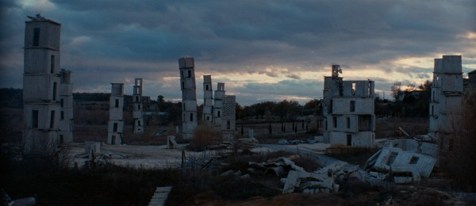
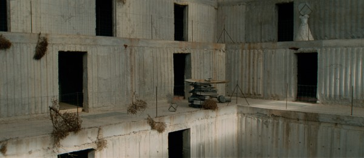
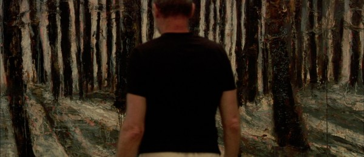
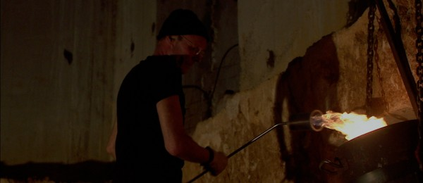
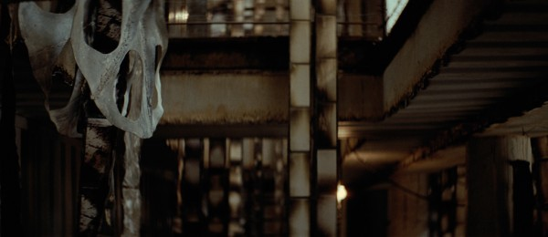
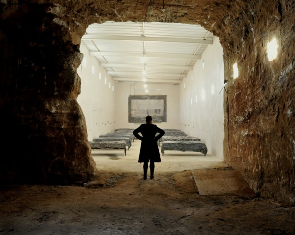
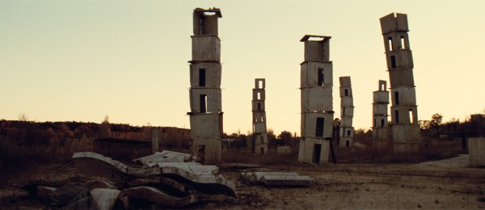

-
Over Your Cities Grass Will Grow
by Courtney A. Fiske September 12, 2011
In an age where cosmopolitanism is king, Anselm Kiefer has long been hailed as an unapologetically German artist. Born in 1945 to Catholic parents in Western Germany, Kiefer entered a postwar generation haunted by the all-too-recent past. Enrolling in art school nearly two decades after T.W. Adorno’s injunction against poetry, Kiefer grappled with both the inadequacy and the necessity of making art in Auschwitz’s wake. In a 1969 series of photographic self-portraits, Kiefer, clad in Third Reich regalia and arm raised in the Seig Heil, re-enacted Hitler’s “Occupations” of Europe. He has since returned repeatedly to the icons that propelled Nazism’s genocidal “Solution.” To some contemporary critics, Kiefer worked through the psychic repressions of a Germany debilitated by its collective “inability to mourn.” To others, he indulged in the fascination of fascism, employing irony where solemnity was due.
Sophie Fiennes’ film, Over Your Cities Grass Will Grow, documents Kiefer’s latest project, a sprawling complex of buildings, tunnels, and towers erected at La Ribaute, an abandoned silk factory in Barjac, France. Her film provides little context for the artist either Kiefer or his art during its 100-minute run time. The camera delves almost immediately into Kiefer’s Delphic constructions, variously exquisite and oppressive in their aesthetic effects. The artist first appears twenty minutes in, his back turned to the viewer.
Context, however, proves unnecessary. For Fiennes, the true subject is not Kiefer’s biography but the enormity of his artistic vision. La Ribaute’s monumental scale (72 acres, 42 buildings, five assistants); its massive objects (12-foot tall canvases, 600-pound books, 300-ton sculptures); its synthesis of artwork and display space: each evidences Kiefer’s desire to create a Gesamtkunstwerk, or a total work of art. While the museum’s usual scheme of titles, wall labels, and audio guides allows spectators to confront art in pre-digested form, Kiefer’s showrooms resist all interpretive impulses. Absent exegetic markings, save those present in the works themselves, his hermetic compound stands as an anomaly in an art-world eager to tell you where to look and how: a deviance that Fiennes’ film upholds. Here, the only frames provided are Kiefer’s own, voiced in an interview with an eager German journalist. Without a curator’s blurb for guidance, the viewer experiences Kiefer’s work as it was meant to be experienced: directly, elementally, and bluntly.
In abstaining from comment, Fiennes’ film proves documentary in the most literal sense. Moving through La Ribaute’s spaces as would a curious visitor, Fiennes’ camera observes and refuses to prescribe. With long, steady takes, she traverses the subterranean rooms and above-ground galleries of Kiefer’s compound. What we see is a landscape in ruin, littered with detritus and dust, devoid of all but traces of a long-gone human presence. Illuminated alternately by solitary bulbs and floods of natural light, Kiefer’s constructions are allowed to stand as they are: some confined, others towering in scale. Here, the haunting dissonances of György Ligeti, a postwar Hungarian composer and Kubrick favorite, take the place of pedantic analysis. These spaces and the artworks they contain arrive raw, unfiltered by the critic’s compulsion to explain. Paired with the drama of Ligeti’s score, La Ribaute’s complex layering of art and architecture provokes an intense emotional response.
The film’s sparseness may frustrate some viewers, as Kiefer’s oeuvre nearly begs for annotation. Equal parts esoteric and expansive, his references flow from some storied elsewhere that bears scant resemblance to the present. As Kiefer has said point-blank, “My work is never about today.” Motifs from Teutonic lore, Lurianic messianism, Jewish mysticism, Old Norse poetry, Babylonian texts, and Oriental mythology recur obsessively in his art. In the film, Kiefer jumps from a meditation on Jason, leader of the Argonauts, to the sephiroth of Kabbalistic creation myth. He mentions 16th-century polymath Robert Fludd in passing and recounts Heidegger’s lectures on boredom, then turns to quantum physics. He scrawls the Hebraic name “Schechina” across the top of a canvas, pencils the digits one through ten on a stiffened white dress, and shouts “Bonjour Tristesse!” while throwing plates of glass in his flip-flops. Each moment attests to Kiefer’s profound idiosyncrasy and the intensely personal nature of his iconography. Tracing the tenuous lines of convergence that unite his work, Kiefer’s spectator must leap across cultures and epochs with no guarantee of finding stable ground.
Traditional artists’ tools of easel, palette, and acrylic color have no place in Kiefer’s process. His tonal range admits of nothing artificial: only grays, ochers, and the red of actual rust. He works with his canvases on the ground, alternately stepping on their surface and exposing them to an array of unorthodox substances. He instructs his assistant to hurl dirt at a freshly painted canvas and drip acid on a suspended metal book. He heats lead with a blowtorch and pours the product down a pile of contorted concrete. He sets books ablaze with stunning salmon and lavender flames, then rakes their soft ashes. Glass, clay, and ceramics are broken to spectacular effect, variously flung down hallways and toppled onto the floor, while the artist’s other materials of choice — straw, concrete, and standing water — prefer to aggregate en masse. Fiennes’ skillful edits contrast the violence of Kiefer’s acts of shattering, blanching, and scalding with the passivity of the monuments he produces.
With a predilection for industrial materials comes a need for industrial machinery. As repeated shots of bulldozers and dump trucks remind us, La Ribaute is at once an art studio and a construction site. Fiennes lavishes screen time on excavators excavating, cement mixers mixing, and forklifts lifting—often for stretches of four minutes or longer. These banal moments trail some of the film’s most evocative sequences. Fiennes scans a three-story bookshelf filled with weathered lead volumes, jagged shards of glass, and abstruse cursive script, then cuts to a long shot of one of Kiefer’s assistants stoking a furnace. She tracks through a vaulted archive cluttered with filing cabinets and half-finished paintings; as she turns the corner, plates fly from some hidden space behind the camera, bursting as they meet the ground. The ensuing shot: a close-up of a drilling machine.
Far from arbitrary, Fiennes’ direction illuminates the tension between Kiefer’s mundane media and its sublime effects. His materials and tools are pedestrian, the stuff of assembly lines and scrap heaps. The geographies he renders — high-horizon landscapes of oceans, forests, and plains — are similarly familiar. Names like Lilith and Josiah ring with Biblical charge: we feel like we’ve heard them before. Yet, in the context of La Ribaute, the commonplace gives way to the uncanny. A multi-ton sculpture comprised of undulating concrete, exposed reinforcing rods, and a shipwrecked boat conjures numerous associations: the Great Flood, the Berlin Wall, and some primordial catastrophe. The multiple meanings evoked exceed our ability to apprehend them. Outward accessibility yields to a profound elusiveness. Objects, materials, and themes that have been seen before now appear strange.
So unsettled, the art acquires a visceral quality. Kiefer, indeed, is no allegorist in the traditional sense, à la Rubens or Bruegel. No obdurate rules govern the relationship between his representations and their ostensible subjects. Neither illustrative nor literal, his paintings are not one-to-one mappings from myth to canvas, nor do they purport to be. While Kiefer’s looping cursive and comments throughout the film hint at a certain depth of meaning, precise articulations are always deferred.
Critics frequently analogize Kiefer to an archaeologist, excavating the ghosts of a Germany still paralyzed by its past. The project at Barjac, however, shows him to be just the opposite. While an archaeologist uncovers, clarifies, and constructs wholes from fragments, Kiefer buries, obscures, and revels in disintegration. Close-ups of his canvases reveal a series of sedimented layers, each the product of numerous ruminations and textures. Strewn over the floor of his cavernous warehouse, Kiefer’s paintings engender new and ever-more oblique associations.
Making sense of La Ribaute thus becomes a somewhat absurd task, as the artist readily admits. Speaking to an assistant, he describes the Kabbalists’ ability to generate symbolism from arbitrary markers—the number of words in a text, for instance—as verging on farce. “It becomes completely ridiculous,” he exclaims. “It doesn’t make any sense anymore, but they like this.” The same could be said of Kiefer. Fiennes shows us an artist whose rhythms are cyclical and whose process is unplanned. When a German interviewer refers to a page of Kiefer’s lead tomes as “empty,” the artist retorts: “It’s not empty. It contains everything.” Hopelessly overcoded, Kiefer’s production is now too vacant, now too full.
This idea of deferred or irrecuperable meaning undergirds Kiefer’s project. Tracking slowly through La Ribaute, the film’s viewer cannot help but experience a sense of loss. Take, for example, Fiennes’ extended shots of Kiefer’s oversized lead books. Some are stacked on lofty shelves entangled in wire; others are piled on the floor, sandwiched between slabs of cement, shards of glass, and desiccated poppies. While most are closed, some display pages oxidized in a range of watery grays, absent any text. Belying their conventional raison d’être (namely, to be read), these books furnish the foundation for a series of looming towers, captured poignantly in the film’s final shots. As cranes lower L-shaped blocks of concrete over these volumes, the inaccessibility of their words becomes clear. Crushed under concrete and their own weight, the texts stand not as repositories of knowledge acquired, but as reminders of wisdom lost. Coupled with Fiennes’ survey of La Ribaute’s desolate interiors, these books inspire a distinct melancholy. History, Kiefer seems to say, is nothing but a succession of irreparable losses and catastrophes. As the artist put it himself, “Auschwitz, unfortunately, does not preclude other Auschwitzes.”
It follows that Kiefer’s artistic endeavor has been defined as a “project of mourning,” though the object of loss has shifted over the course of his career. In the 1970s, with his somber renderings of fascist architectures and reconstructed genealogies, Kiefer mourned his native Kultur, now contaminated by Fascism. In the early 1980s, he turned to the Third Reich’s Jewish victims in his series of Margarete and Shulamith canvases, based on Paul Celan’s famous “Death Fugue.” With La Ribaute, however, Kiefer pursues something more universal. Midway through the film, after explaining man’s most primal yearning—to return to the “warm sea” whence he came — Kiefer laments his inability to “reach the core,” that basic principle that “holds the world together.” Elsewhere, he has spoken of a “layer behind,” which, if he could only access it, would enable him to stop painting. The loss grieved at La Ribaute, then, is our inability to know our origins, to reach an ultimate synthesis of meaning and discern “the core.” Tellingly, Kiefer’s intricate iconographies fail to produce a grand rècit. Their constellations of meaning remain as opaque as the compound’s ubiquitous lead tomes. For Kiefer, the whole is impossible: if they are to exist at all, all things — glass, lead, concrete, clay — must exist as fragments.
Fiennes’ refusal to interpret, to allow anyone to discuss Kiefer’s work except Kiefer, is thus crucial to the success of her film. Erudite expositions that pin each pictorial reference to a textual source miss the point. In Kiefer’s oeuvre, tension and paradox reign, and the artist delights in both, masterfully juxtaposing the ponderous and the brittle, the rigid and the soft. La Ribaute works precisely to the extent that it fails to map its own labyrinthine allusions. Alert and unobtrusive, Fiennes’ camera performs a comparable feat, ringing these ambiguities without explicitly spelling them out. Subtle, delicate, and affecting, Over Your Cities Grass Will Grow captures Kiefer’s complexity enough to show just how much it is we’re missing.